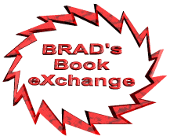
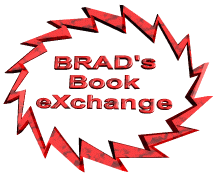

|
 |
|
 |
Compare that to the
money you'd lose selling the book for less or not selling them at all!
Compare these prices to buying new books you're just going to sell in 4
months anyway! And that's why we at BRAD's Book eXchange say: "Woo-hoo!"
What the heck is this?
This centralized database is a resource for Graceland students to buy and
sell their textbooks to and from other Graceland students.
Post your books for sale here so students who need them can buy them
from you, and come here first to buy the books you need so other
students aren't stuck with books they're done with! Everybody wins -- save time
and money!
What does it cost?
You can post all your books for sale for FREE. You can search the
database for books you need for FREE. If you're looking to buy and
find exactly what you need, we'll instantly send the buyer and seller
the contact information they need get together and exchange the book
and remove the book from the database automagically.
To keep this service running, we charge only $3 for each book
successfully
sold through the service, payable by simply dropping 3 greenbacks in the
campus mail to Brad Hannah, Box #206.
What a bargain! Without Further Ado...